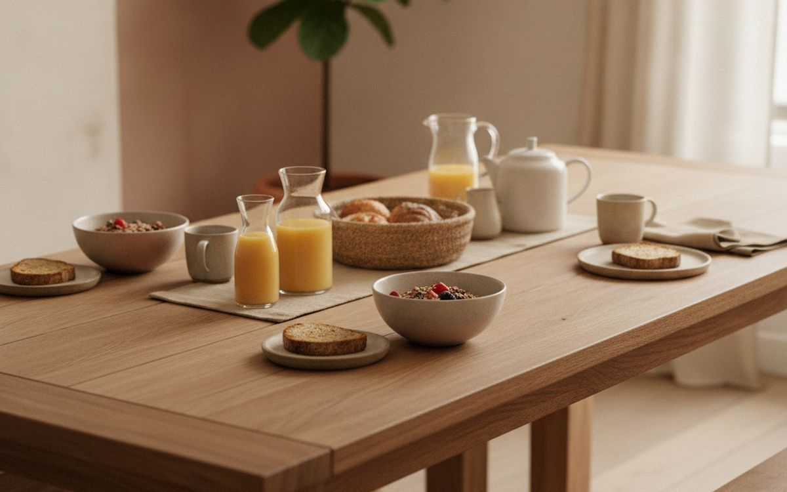
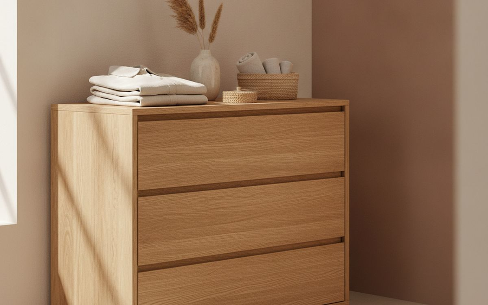
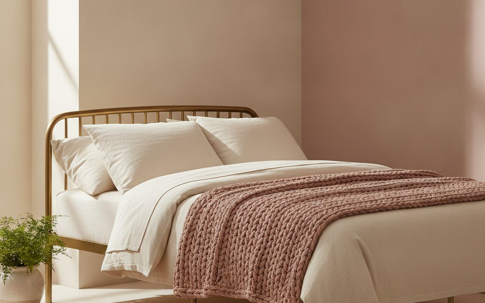
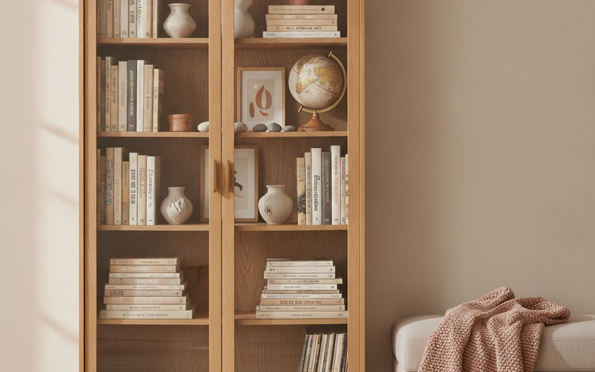
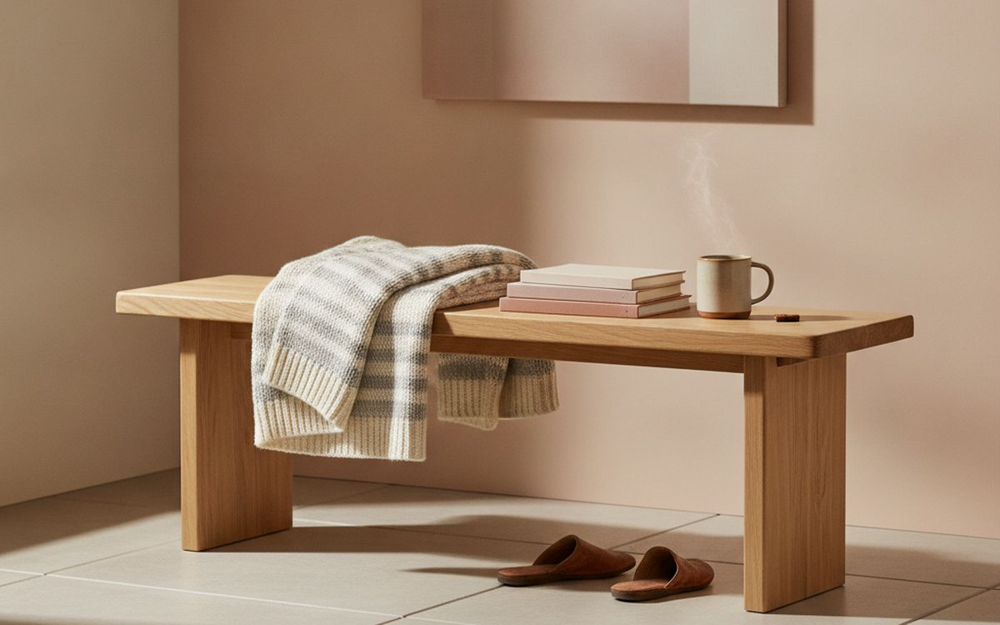
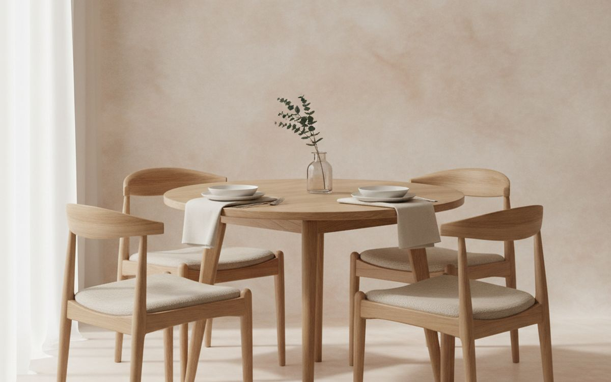
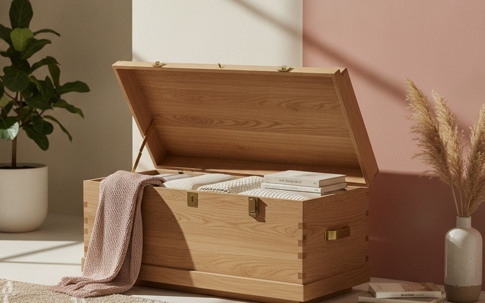
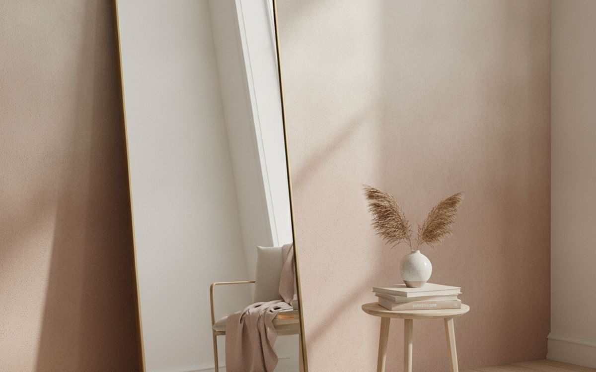

דעו מה לבדוק ומה להשאיר מאחור. זה נשמע פשוט, אבל הקטגוריה הזו מושכת מוצרים שנועדו להיראות טוב בתמונות ולא לעבוד טוב. המבחן השימושי הוא האם פריט פותר בעיה חוזרת, מחזיק מעמד מספיק זמן כדי להצדיק את מחירו, ונשאר קל לחיות איתו אחרי השבוע הראשון.
המדריך הזה מתמקד בתועלות המעשיות האלה. אנחנו מעדיפים מוצרים מובנים על פני רשימות תכונות, חלקים ניתנים לתיקון או להחלפה על פני חידושים אטומים, ופריט צנוע בשימוש שבועי על פני פריט מרשים שנשאר בארון. המחירים הם משוערים בזמן הכתיבה ומשתנים לעיתים קרובות.
מגבלה אחת כנה: אלו המלצות קנייה מבוססות מחקר על מפרטים, הנחיות בטיחות מבוססות היכן שרלוונטי, ותבניות שימוש ארוכות טווח של בעלים. הן אינן טענות שכל דגם נבדק אישית. התאמה, טעם וצרכים אישיים נשארים אישיים, והיכן שזה משנה – אנחנו מציינים זאת.
בקצרה
שולחן אוכל מעץ מלא
המקום להתחיל בו
גילוי נאות. הקישורים בעמוד הזה הם קישורי שותפים. אם תקנו דרכם אנחנו עשויים להרוויח עמלה, בלי תוספת עלות לכם. זה לא משפיע על מה שנכנס לרשימה או על הסדר שלו.
איך בחרנו
חיפשנו מוצרים שפותרים בעיה ברורה, קלים להבנה ולתחזוקה, ויש להם מספיק אורך חיים שימושי כדי לנצח אלטרנטיבה זולה וחד-פעמית. בדקנו חומרים, מידות ומדיניות החזרה, נתנו משקל נוסף לאחריות וחלפים נפוצים, וסימנו את הפשרות במקום להסתיר אותן.
השוואה מהירה
המחירים הם הערכה נכון לזמן הכתיבה ומשתנים לעיתים קרובות.
הבחירות

01 · המקום להתחיל בושולחן אוכל מעץ מלא
שולחן אוכל מעץ מלא מרוויח מקום כי הוא מטפל בבעיה ספציפית וחוזרת במקום להמציא שגרה חדשה. הגרסה הטובה ביותר היא בדרך כלל זו עם פקדים פשוטים, מבנה הגיוני וללא צורך במנוי מיותר או אביזר קנייני. לפני הקנייה, בדקו חומרים, מידות ומדיניות החזרה. רישום טוב צריך להבהיר את הפרטים האלה; מדידות מעורפלות והבטחות ללא מפרטים הם סיבה להמשיך הלאה. הטיעון בעדו: פותר בעיה חוזרת במקום אי-נוחות חד-פעמית, זמין בגרסאות פשוטות מבלי לשלם על תוספות דקורטיביות, וקל להשוואה לפי מפרטים שימושיים. הפשרה אמיתית: האיכות משתנה באופן חד בין יצרנים ומודדים את החלל, בדקו תאימות וקראו את תנאי ההחזרה לפני ההזמנה, אז שקלו זאת מול התדירות שבה הוא ישמש בפועל.
$15–40על מה מוותרים: האיכות משתנה באופן חד בין יצרנים
בעד
- פותר בעיה חוזרת במקום אי-נוחות חד-פעמית
- זמין בגרסאות פשוטות מבלי לשלם על תוספות דקורטיביות
- קל להשוואה לפי מפרטים שימושיים
נגד
- האיכות משתנה באופן חד בין יצרנים
- מדדו את החלל, בדקו תאימות וקראו את תנאי ההחזרה לפני ההזמנה

02 · שדרוג יומיומישידת מגירות מעץ קשה
שידת מגירות מעץ קשה מרוויחה מקום כי היא מטפלת בבעיה ספציפית וחוזרת במקום להמציא שגרה חדשה. הגרסה הטובה ביותר היא בדרך כלל זו עם פקדים פשוטים, מבנה הגיוני וללא צורך במנוי מיותר או אביזר קנייני. לפני הקנייה, בדקו את האחריות ואת זמינות חלקי החילוף. רישום טוב צריך להבהיר את הפרטים האלה; מדידות מעורפלות והבטחות ללא מפרטים הם סיבה להמשיך הלאה. הטיעון בעדו: פותר בעיה חוזרת במקום אי-נוחות חד-פעמית, זמין בגרסאות פשוטות מבלי לשלם על תוספות דקורטיביות, וקל להשוואה לפי מפרטים שימושיים. הפשרה אמיתית: בדקו מידות לפני ההזמנה ומדדו את החלל, בדקו תאימות וקראו את תנאי ההחזרה לפני ההזמנה, אז שקלו זאת מול התדירות שבה הוא ישמש בפועל.
$25–70על מה מוותרים: בדקו מידות לפני ההזמנה
בעד
- פותר בעיה חוזרת במקום אי-נוחות חד-פעמית
- זמין בגרסאות פשוטות מבלי לשלם על תוספות דקורטיביות
- קל להשוואה לפי מפרטים שימושיים
נגד
- בדקו מידות לפני ההזמנה
- מדדו את החלל, בדקו תאימות וקראו את תנאי ההחזרה לפני ההזמנה

03 · שינוי קטן, רווח אמיתימסגרת מיטה ממתכת
מסגרת מיטה ממתכת מרוויחה מקום כי היא מטפלת בבעיה ספציפית וחוזרת במקום להמציא שגרה חדשה. הגרסה הטובה ביותר היא בדרך כלל זו עם פקדים פשוטים, מבנה הגיוני וללא צורך במנוי מיותר או אביזר קנייני. לפני הקנייה, בדקו אם הפקדים קלים לשימוש. רישום טוב צריך להבהיר את הפרטים האלה; מדידות מעורפלות והבטחות ללא מפרטים הם סיבה להמשיך הלאה. הטיעון בעדו: פותר בעיה חוזרת במקום אי-נוחות חד-פעמית, זמין בגרסאות פשוטות מבלי לשלם על תוספות דקורטיביות, וקל להשוואה לפי מפרטים שימושיים. הפשרה אמיתית: הגרסה הזולה ביותר היא לעיתים רחוקות הערך הטוב ביותר ומדדו את החלל, בדקו תאימות וקראו את תנאי ההחזרה לפני ההזמנה, אז שקלו זאת מול התדירות שבה הוא ישמש בפועל.
$40–120על מה מוותרים: הגרסה הזולה ביותר היא לעיתים רחוקות הערך הטוב ביותר
בעד
- פותר בעיה חוזרת במקום אי-נוחות חד-פעמית
- זמין בגרסאות פשוטות מבלי לשלם על תוספות דקורטיביות
- קל להשוואה לפי מפרטים שימושיים
נגד
- הגרסה הזולה ביותר היא לעיתים רחוקות הערך הטוב ביותר
- מדדו את החלל, בדקו תאימות וקראו את תנאי ההחזרה לפני ההזמנה

04 · מיועד לשימוש חוזרכוננית ספרים עם דלתות זכוכית
כוננית ספרים עם דלתות זכוכית מרוויחה מקום כי היא מטפלת בבעיה ספציפית וחוזרת במקום להמציא שגרה חדשה. הגרסה הטובה ביותר היא בדרך כלל זו עם פקדים פשוטים, מבנה הגיוני וללא צורך במנוי מיותר או אביזר קנייני. לפני הקנייה, בדקו דוחות בעלים עצמאיים לאחר שישה חודשים או יותר. רישום טוב צריך להבהיר את הפרטים האלה; מדידות מעורפלות והבטחות ללא מפרטים הם סיבה להמשיך הלאה. הטיעון בעדו: פותר בעיה חוזרת במקום אי-נוחות חד-פעמית, זמין בגרסאות פשוטות מבלי לשלם על תוספות דקורטיביות, וקל להשוואה לפי מפרטים שימושיים. הפשרה אמיתית: דורש ניקוי או תחזוקה מדי פעם ומדדו את החלל, בדקו תאימות וקראו את תנאי ההחזרה לפני ההזמנה, אז שקלו זאת מול התדירות שבה הוא ישמש בפועל.
$60–180על מה מוותרים: דורש ניקוי או תחזוקה מדי פעם
בעד
- פותר בעיה חוזרת במקום אי-נוחות חד-פעמית
- זמין בגרסאות פשוטות מבלי לשלם על תוספות דקורטיביות
- קל להשוואה לפי מפרטים שימושיים
נגד
- דורש ניקוי או תחזוקה מדי פעם
- מדדו את החלל, בדקו תאימות וקראו את תנאי ההחזרה לפני ההזמנה
05 · בחירת הערךשולחן צד וינטג'
שולחן צד וינטג' מרוויח מקום כי הוא מטפל בבעיה ספציפית וחוזרת במקום להמציא שגרה חדשה. הגרסה הטובה ביותר היא בדרך כלל זו עם פקדים פשוטים, מבנה הגיוני וללא צורך במנוי מיותר או אביזר קנייני. לפני הקנייה, בדקו את הגודל הכולל לאחר האחסון. רישום טוב צריך להבהיר את הפרטים האלה; מדידות מעורפלות והבטחות ללא מפרטים הם סיבה להמשיך הלאה. הטיעון בעדו: פותר בעיה חוזרת במקום אי-נוחות חד-פעמית, זמין בגרסאות פשוטות מבלי לשלם על תוספות דקורטיביות, וקל להשוואה לפי מפרטים שימושיים. הפשרה אמיתית: תופס קצת מקום אחסון ומדדו את החלל, בדקו תאימות וקראו את תנאי ההחזרה לפני ההזמנה, אז שקלו זאת מול התדירות שבה הוא ישמש בפועל.
$20–55על מה מוותרים: תופס קצת מקום אחסון
בעד
- פותר בעיה חוזרת במקום אי-נוחות חד-פעמית
- זמין בגרסאות פשוטות מבלי לשלם על תוספות דקורטיביות
- קל להשוואה לפי מפרטים שימושיים
נגד
- תופס קצת מקום אחסון
- מדדו את החלל, בדקו תאימות וקראו את תנאי ההחזרה לפני ההזמנה
06 · למשתמש הרגילשולחן עבודה מעץ קשה
שולחן עבודה מעץ קשה מרוויח מקום כי הוא מטפל בבעיה ספציפית וחוזרת במקום להמציא שגרה חדשה. הגרסה הטובה ביותר היא בדרך כלל זו עם פקדים פשוטים, מבנה הגיוני וללא צורך במנוי מיותר או אביזר קנייני. לפני הקנייה, בדקו אם חומרים מתכלים הם קנייניים. רישום טוב צריך להבהיר את הפרטים האלה; מדידות מעורפלות והבטחות ללא מפרטים הם סיבה להמשיך הלאה. הטיעון בעדו: פותר בעיה חוזרת במקום אי-נוחות חד-פעמית, זמין בגרסאות פשוטות מבלי לשלם על תוספות דקורטיביות, וקל להשוואה לפי מפרטים שימושיים. הפשרה אמיתית: לא כל משק בית זקוק לאחד ומדדו את החלל, בדקו תאימות וקראו את תנאי ההחזרה לפני ההזמנה, אז שקלו זאת מול התדירות שבה הוא ישמש בפועל.
$80–250על מה מוותרים: לא כל משק בית זקוק לאחד
בעד
- פותר בעיה חוזרת במקום אי-נוחות חד-פעמית
- זמין בגרסאות פשוטות מבלי לשלם על תוספות דקורטיביות
- קל להשוואה לפי מפרטים שימושיים
נגד
- לא כל משק בית זקוק לאחד
- מדדו את החלל, בדקו תאימות וקראו את תנאי ההחזרה לפני ההזמנה

07 · שמרו על פשטותספסל עץ
ספסל עץ מרוויח מקום כי הוא מטפל בבעיה ספציפית וחוזרת במקום להמציא שגרה חדשה. הגרסה הטובה ביותר היא בדרך כלל זו עם פקדים פשוטים, מבנה הגיוני וללא צורך במנוי מיותר או אביזר קנייני. לפני הקנייה, בדקו את המשקל וכיצד הוא יובל. רישום טוב צריך להבהיר את הפרטים האלה; מדידות מעורפלות והבטחות ללא מפרטים הם סיבה להמשיך הלאה. הטיעון בעדו: פותר בעיה חוזרת במקום אי-נוחות חד-פעמית, זמין בגרסאות פשוטות מבלי לשלם על תוספות דקורטיביות, וקל להשוואה לפי מפרטים שימושיים. הפשרה אמיתית: החזרות יכולות להיות מסורבלות ומדדו את החלל, בדקו תאימות וקראו את תנאי ההחזרה לפני ההזמנה, אז שקלו זאת מול התדירות שבה הוא ישמש בפועל.
$12–35על מה מוותרים: החזרות יכולות להיות מסורבלות
בעד
- פותר בעיה חוזרת במקום אי-נוחות חד-פעמית
- זמין בגרסאות פשוטות מבלי לשלם על תוספות דקורטיביות
- קל להשוואה לפי מפרטים שימושיים
נגד
- החזרות יכולות להיות מסורבלות
- מדדו את החלל, בדקו תאימות וקראו את תנאי ההחזרה לפני ההזמנה

08 · פחות עומס, יותר שימושסט כיסאות אוכל פשוטים
סט כיסאות אוכל פשוטים מרוויח מקום כי הוא מטפל בבעיה ספציפית וחוזרת במקום להמציא שגרה חדשה. הגרסה הטובה ביותר היא בדרך כלל זו עם פקדים פשוטים, מבנה הגיוני וללא צורך במנוי מיותר או אביזר קנייני. לפני הקנייה, בדקו כמה קל לנקות אותו. רישום טוב צריך להבהיר את הפרטים האלה; מדידות מעורפלות והבטחות ללא מפרטים הם סיבה להמשיך הלאה. הטיעון בעדו: פותר בעיה חוזרת במקום אי-נוחות חד-פעמית, זמין בגרסאות פשוטות מבלי לשלם על תוספות דקורטיביות, וקל להשוואה לפי מפרטים שימושיים. הפשרה אמיתית: גרסה פשוטה יותר עשויה לעבוד באותה מידה ומדדו את החלל, בדקו תאימות וקראו את תנאי ההחזרה לפני ההזמנה, אז שקלו זאת מול התדירות שבה הוא ישמש בפועל.
$30–90על מה מוותרים: גרסה פשוטה יותר עשויה לעבוד באותה מידה
בעד
- פותר בעיה חוזרת במקום אי-נוחות חד-פעמית
- זמין בגרסאות פשוטות מבלי לשלם על תוספות דקורטיביות
- קל להשוואה לפי מפרטים שימושיים
נגד
- גרסה פשוטה יותר עשויה לעבוד באותה מידה
- מדדו את החלל, בדקו תאימות וקראו את תנאי ההחזרה לפני ההזמנה

09 · האופציה המיוחדתארגז אחסון
ארגז אחסון מרוויח מקום כי הוא מטפל בבעיה ספציפית וחוזרת במקום להמציא שגרה חדשה. הגרסה הטובה ביותר היא בדרך כלל זו עם פקדים פשוטים, מבנה הגיוני וללא צורך במנוי מיותר או אביזר קנייני. לפני הקנייה, בדקו את תקן הבטיחות המוצהר ואת ההוראות. רישום טוב צריך להבהיר את הפרטים האלה; מדידות מעורפלות והבטחות ללא מפרטים הם סיבה להמשיך הלאה. הטיעון בעדו: פותר בעיה חוזרת במקום אי-נוחות חד-פעמית, זמין בגרסאות פשוטות מבלי לשלם על תוספות דקורטיביות, וקל להשוואה לפי מפרטים שימושיים. הפשרה אמיתית: הזמינות משתנה במהירות ומדדו את החלל, בדקו תאימות וקראו את תנאי ההחזרה לפני ההזמנה, אז שקלו זאת מול התדירות שבה הוא ישמש בפועל.
$50–150על מה מוותרים: הזמינות משתנה במהירות
בעד
- פותר בעיה חוזרת במקום אי-נוחות חד-פעמית
- זמין בגרסאות פשוטות מבלי לשלם על תוספות דקורטיביות
- קל להשוואה לפי מפרטים שימושיים
נגד
- הזמינות משתנה במהירות
- מדדו את החלל, בדקו תאימות וקראו את תנאי ההחזרה לפני ההזמנה

10 · התוספת השימושיתמראה עומדת
מראה עומדת מרוויחה מקום כי היא מטפלת בבעיה ספציפית וחוזרת במקום להמציא שגרה חדשה. הגרסה הטובה ביותר היא בדרך כלל זו עם פקדים פשוטים, מבנה הגיוני וללא צורך במנוי מיותר או אביזר קנייני. לפני הקנייה, בדקו אם היא מחליפה משהו שכבר בבעלותכם. רישום טוב צריך להבהיר את הפרטים האלה; מדידות מעורפלות והבטחות ללא מפרטים הם סיבה להמשיך הלאה. הטיעון בעדו: פותר בעיה חוזרת במקום אי-נוחות חד-פעמית, זמין בגרסאות פשוטות מבלי לשלם על תוספות דקורטיביות, וקל להשוואה לפי מפרטים שימושיים. הפשרה אמיתית: התועלת תלויה בשימוש עקבי ומדדו את החלל, בדקו תאימות וקראו את תנאי ההחזרה לפני ההזמנה, אז שקלו זאת מול התדירות שבה הוא ישמש בפועל.
$10–45על מה מוותרים: התועלת תלויה בשימוש עקבי
בעד
- פותר בעיה חוזרת במקום אי-נוחות חד-פעמית
- זמין בגרסאות פשוטות מבלי לשלם על תוספות דקורטיביות
- קל להשוואה לפי מפרטים שימושיים
נגד
- התועלת תלויה בשימוש עקבי
- מדדו את החלל, בדקו תאימות וקראו את תנאי ההחזרה לפני ההזמנה
שאלות נפוצות
האם כדאי לי לקנות את האופציה הזולה ביותר?
בדרך כלל לא. תחתית הקטגוריה חוסכת לעיתים קרובות כסף על ידי שימוש באביזרים חלשים יותר, אחריות קצרה יותר או חלקים שלא ניתן להחליף. המטרה הנכונה היא המוצר הפשוט ביותר שעונה על הצורך האמיתי, לא המחיר הנראה הנמוך ביותר.
מתי הזמן הטוב ביותר לקנות?
עקבו אחר המחיר הרגיל למשך כמה שבועות אם הרכישה אינה דחופה. תווית אחוז הנחה אינה עדות לעסקה. השוו את מספר הדגם המדויק, עלות המשלוח, האחריות ועמלת ההחזרה לפני קבלת החלטה.
האם משומש או מחודש זה סביר?
לעתים קרובות, במיוחד עבור מוצרים עמידים עם חלקים שניתן לבדוק. הימנעו מציוד בטיחות משומש, מוצרים רגישים להיגיינה או כל דבר עם בלאי סוללה נסתר, אלא אם כן הוא מגיע עם בדיקות, אחריות משמעותית ומסלול החזרה קל.
מה כדאי לבדוק כשהמוצר מגיע?
פתחו אותו בתוך חלון ההחזרה. אשר את המידות והחלקים הכלולים, בדקו נזקים, בדקו כל פקד, ושמרו את האריזה עד שתדעו שהוא עובד במקום ובשגרה שלשמם קניתם אותו.
הדילים של היום
ראו מה מוזל עכשיו.
דילים →← כל המדריכים
כשותפים של עליאקספרס אנחנו מרוויחים עמלה מרכישות מזכות. המחירים והזמינות נכונים לזמן הפרסום ועשויים להשתנות.